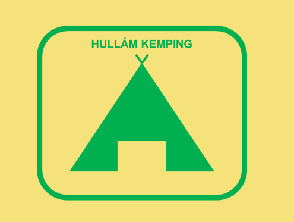

Bevezetés a vektorgrafikába
A vektorgrafika központi fogalma az alakzat, más néven geometriai elem.
Lényege, hogy nem pixelekből/képpontokból áll, hanem matematikai képleteken keresztül geometriai alakzatokból (körökből, négyszögekből, sokszögekből, pontokból, egyenesekből, görbékből, stb…) tevődik össze. Egyik legnagyobb előnye, hogy az alakzatok nem lementett képpontok formájában tárolódnak, hanem az alakzatokat kirajzoló képletekkel. Ennek eredményeként egy vektoros grafika gyakorlatilag végtelenségig kicsinyíthető és nagyítható minőségromlás nélkül, mégpedig úgy, hogy a formák határai teljesen élesek maradnak.
Megjegyzés: A vektorgrafikus ábrák bármilyen nagyításban élesek maradnak, ellentétben a rasztergrafikus képekkel, amelyek nagyításkor pixelesednek.
A vektorgrafika tulajdonságai
- Méretezhetőség: minőségveszteség nélkül nagyítható és kicsinyíthető.
- Felbontásfüggetlenség: bármilyen eszközön tiszta és éles megjelenítés.
- Kis fájlméret: matematikai leírás alapján kisebb méretű fájlokat eredményez.
- Szerkeszthetőség: elemei könnyen módosíthatók, áthelyezhetők.
- Pontosság: precíz geometriai meghatározás és manipuláció.
Vektorgrafikus és rasztergrafikus tárolás összehasonlítása
| Kategória |
Vektorgrafika |
Rasztergrafika |
| Adattárolás módja |
Geometriai formák és egyenletek alapján |
Pixelek mátrixaként, minden pixel színértékkel |
| Méretezhetőség |
Minőségromlás nélkül méretezhető |
Nagyításnál pixelesedés fordulhat elő |
| Fájlméret |
Jellemzően kisebb (kivéve komplex ábrák) |
Nagyobb, különösen nagy felbontásnál |
| Felhasználási területek |
Logók, ikonok, technikai rajzok, illusztrációk |
Fotók, digitális művészet, részletgazdag képek |
Vektorgrafikus szerkesztőprogramok
- Adobe Illustrator: professzionális eszközkészlet és funkcionalitás.
- CorelDRAW: népszerű program a nyomdai és tervezési iparban.
- Inkscape: nyílt forráskódú, ingyenes, sokoldalú vektorgrafikai szerkesztő.
- Affinity Designer: megfizethető, hatékony alternatíva.
Vektorgrafikus programok vs. irodai programok
Előnyök (önálló programok)
- Speciális eszközök: fejlett, célzott szerkesztési lehetőségek.
- Professzionális minőség: nyomdai és digitális felhasználásra is alkalmas.
- Komplexitás kezelése: rétegek, maszkok, összetett műveletek.
Hátrányok (önálló programok)
- Tanulási görbe: összetettebb, időigényesebb megtanulni.
- Költség: drága lehet (pl. Adobe Illustrator).
- Erőforrás-igény: több memóriát és teljesítményt igényelhet.
Irodai programok jellemzői
- Korlátozott funkcionalitás: egyszerűbb grafikák készítésére alkalmas.
- Egyszerű használat: gyorsabb tanulás, könnyebb kezelés.
- Költséghatékonyság: általában a meglévő irodai csomag része.
Vektorgrafikai eszközök és szoftverek
A vektorgrafikai eszközök ma már szinte minden olyan szoftverben megtalálhatók, ahol grafikai elemekre van szükség. Ezek között találhatók:
- Irodai programok: Microsoft Word, PowerPoint, LibreOffice Writer, Impress, Draw
- Speciális célú programok: GeoGebra, Euklides, Euler3D, Blender
- Önálló vektorgrafikai szerkesztőprogramok: Inkscape, CorelDraw, Adobe Illustrator
A továbbiakban az ingyenes és nyílt forráskódú Inkscape programmal foglalkozunk részletesebben.
Az Inkscape program használata
Az Inkscape alapértelmezett képformátuma az SVG (Scalable Vector Graphics), amely skálázható vektorgrafikát jelent. Az SVG szabványt a W3C kezeli, és támogatja a webes megjelenítést.
A modern webböngészők és irodai programok is képesek megjeleníteni az SVG formátumú képeket, így ezek könnyen beágyazhatók weboldalakba vagy dokumentumokba. Az SVG állomány XML alapú, így képes szövegeket, bitképeket és hivatkozásokat is tárolni.
Az Inkscape segítségével az alakzatok létrehozása, módosítása, tulajdonságaik célszerű beállítása egyszerűen megoldható. Az alábbiakban néhány feladatot mutatunk be, amelyek részben korábbi érettségi feladatokon alapulnak.
Szerkesztőprogram eszközkategóriák
Néhány eszköz használatának szemléltetése
Kiválasztó eszköz (Select Tool):
Használata: Kattintsunk egy elemre a kiválasztásához. A fogópontokat használva átméretezhetjük vagy áthelyezhetjük az elemet.
Példa: Egy téglalap áthelyezése és méretének módosítása.
Bezier-görbe eszköz (Bezier Tool):
Használata: Kattintsunk a kezdőpontra, majd kattintással adjuk meg a következő pontokat. Kattintsunk és húzzuk a görbe formálásához.
Példa: Egy ívelt vonal rajzolása egy logóban.
Szöveg eszköz (Text Tool):
Használata: Kattintsunk a dokumentumra, írjuk be a szöveget, majd a tulajdonságsávon állítsuk be a betűtípust, méretet és színt.
Példa: Egy cég neve hozzáadása egy brosúrához.
Klónok használata
A klónok olyan másolatok, amelyek az eredeti objektumtól függnek. Ez azt jelenti, hogy az eredeti objektum módosítása automatikusan kihat a klónokra is.
Használata:
- Kattintsunk a kiválasztandó objektumra.
- Válasszuk a "Szerkesztés" → "Klón készítése" opciót.
- A klónokat ezután szabadon áthelyezhetjük és átméretezhetjük, ugyanakkor formai és színbeli tulajdonságaik továbbra is az eredeti objektumtól függenek.
Az egyik eszközünk a szabályos elrendezésű klónok együttes létrehozására a Csempézett klónok (Szerkesztés > Klónozás > Csempézett klónok létrehozása…) menü használata. A menü használatának az erőssége, hogy a klónokat megadott szabály szerint és elrendezésben hozza létre a szerkesztőprogram.
->Többet a klónok haszálatáról<-
Unió, Metszet, Különbség műveletek
- Unió (Union): Két vagy több objektum összeolvasztása egyetlen új objektummá.
A + B = AB
- Metszet (Intersection): Két vagy több objektum közös területének megtartása.
A ∩ B = C
- Különbség (Difference): Az első objektumból a második által lefedett terület eltávolítása.
A − B = D
Útvonalak (Paths)
Az útvonalak olyan vektoros elemek, amelyek pontokból és a közöttük húzódó görbékből állnak. Az útvonalak rugalmasan szerkeszthetők és átalakíthatók.
Használata:
- Útvonalak létrehozása Bezier-görbékkel vagy vonaleszközökkel.
- Útvonalak szerkesztése pontok és szegmensek hozzáadásával, eltávolításával vagy áthelyezésével.
Példák:
- Logók, ikonok és más grafikai elemek létrehozása.
- Egyedi alakzatok és görbék rajzolása.
Feladat: Kemping ábra elkészítése
Készítse el a következő ábrát!

A prezentációkészítő szoftverek és vektorgrafikus szerkesztők – például az Inkscape – többféle módszert kínálnak az ábra elkészítésére. Az ábra elemei és beállításai egységesek, függetlenül a választott szoftvertől: van kis átfedás a két szoftver között, de érettségin kérhetik az inkscape-en való bemutatását a feladatnak.
Feladatok:
-
A rajzon kétféle színt használjon: a dia hátterének megfelelő sárgát, és
RGB(0, 176, 80) kódú zöldet!
-
A lekerekített sarkú téglalap 14×17 cm méretű, kitöltés nélküli legyen, a szegélye pedig 13 pont vastagságú!
-
A sátrat ábrázoló, szegély nélküli, egyenlő szárú háromszöget befoglaló téglalap 9×12 cm méretű legyen! A sátor ajtaja 2,5×4 cm méretű, sárga, szegély nélküli téglalap legyen, amelyet igazítson a háromszöghöz képest függőlegesen alulra és vízszintesen középre!
-
A háromszög tetején lévő két vonal legyen 5 pontos vastagságú, hosszuk tetszőleges! Illeszkedjenek a háromszöghöz, vagyis az oldalak folytatásai legyenek!
-
A sátor háromszögét, az ajtót ábrázoló téglalapot és a két rudazatot ábrázoló vonalat csoportosítsa, majd igazítsa a lekerekített sarkú téglalap közepére!
-
A sátor fölé – egy ahhoz képest középre igazított szövegdobozba – írja be a „HULLÁM KEMPING” feliratot! A szöveg:
- Arial (vagy Nimbus Sans) betűtípusú
- 26 pontos méretű
- Félkövér stílusú
- A szövegdobozhoz képest vízszintesen középre igazított